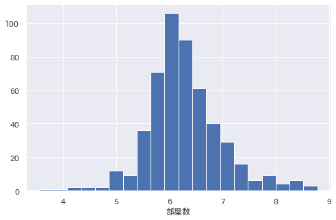
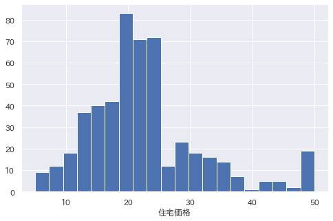
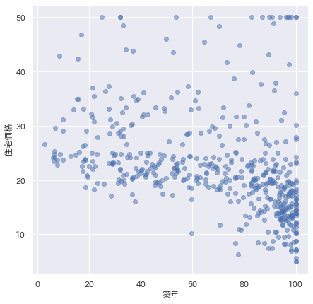
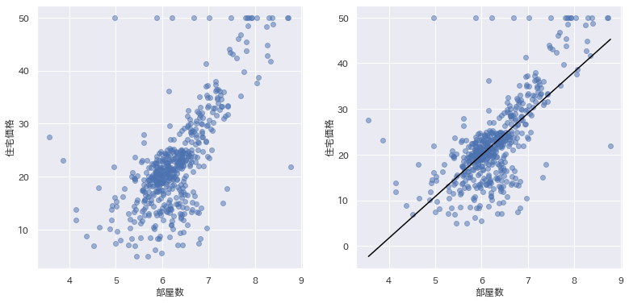
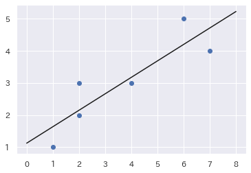

散布図と相関係数#
データサイエンスや機械学習では、単一のデータ列の散らばりよりも、２つのデータ列の関係性 がより重要になります。 ２つのデータ列の関係性が見えると、築年と住宅価格の関係はどうだろう？のような分析ができるようになります。
今回は、属性間の関係性により注目するため、散布図と相関係数を学びます。
準備: ボストン住宅価格データセット#
今回もハンズオン演習では、ポストン住宅価格データセットを用います。
ハンズオン演習を始めるため、Python モジュールとデータセットを読み込んでおきましょう。
import numpy as np
import pandas as pd
import matplotlib.pyplot as plt
import seaborn as sns
try:
import japanize_matplotlib #matplotlibの日本語化
except ModuleNotFoundError:
import os
os.system('pip3 install japanize_matplotlib')
import japanize_matplotlib
sns.set(font="IPAexGothic") #日本語フォント設定
df = pd.read_csv('boston.csv')
df.drop('黒人', axis=1, inplace=True) # 黒人を除去する
df.head()
ちゃんと準備できましたか？
散布図#
散布図は、２つのデータ列を xy座標上にプロットしたグラフです。 散布図を書くと、ふたつのデータの関連性が視覚化見えてきます。
まずは、散布図の威力を確認するために前回の復習を兼ねて、
'部屋数'と'住宅価格'のヒストグラムを書いてみましょう。


二つのヒストグラムを見比べていても、まだ何も関係性は見えてきません。 ここで、散布図を書いてみると、もう少し関係性がみえてきます。
散布図の描画#
Pandas では、plt.scatter(X, Y)を使って、散布図を描画します。
X, Y には、それぞれx軸、y軸に置きたいデータ列を指定します。
アルファ値（透過率）をつけると、重なり具合が濃淡になって見やすくなります。
plt.scatter(df['部屋数'], df['住宅価格'], alpha=0.5)
plt.xlabel('部屋数')
plt.ylabel('住宅価格')
plt.show()
Let's try
いくつかデータ列を選んで、散布図を書いてみましょう。
このように、２つの変数x,yが連動する関係のことを相関関係といいます。
- ｘとｙの間に正の相関がある: 一方の値が大きければ、もう一方の値も大きくなる傾向がある
- ｘとｙの間に負の相関がある: 一方の値が大きくなると、もう一方の値が小さくなる傾向がある

(図は、散布図（QC7つ道具）の書き方と見方。正の相関・負の相関はどのように打点されるかより)
相関係数#
散布図は、２つのデータ列の相関を分析する強力なツールになります。 この関係性を定量化（数値化）する手法が、相関係数です。
相関係数は、 2つデータ列, の関係性の強度を測る指標です。 次のように計算します。
一般的には：
- 1に近いほど、正の相関がある
- 0無相関
- -1に近いほど、負の相関がある
相関係数と因果関係
相関係数は、あくまでもデータ列の間にある線形な関係の尺度に過ぎません。 因果関係を表すものではありません。 相関があるという表現が、あたかも因果関係を示しているかのように誤解されるので注意しましょう。
計算方法#
Python では、ざまざまな方法を用いて相関係数を算出できます。
numpyで計算式をプログラムするscipiモジュールに含まれるpearsonrを用いるdf.corr(): 数値データの全ての相関を一度に求める（→コースワーク1で練習します)
相関係数を求める関数を定義する⭐️⭐️#
Pythonは、様々な関数を定義してライブラリとして提供してくれています。ほとんどの場合は、提供されたライブラリを用いると、簡単に計算できます。しかし、原理を理解するときは、少し数式とコードに立ち戻って試してみることも重要です。
まず、numpyを用いてプログラムを書く方法を試してみます。
def corr(x, y):
x = np.array(x)
y = np.array(y)
x_diff = x - np.mean(x)
y_diff = y - np.mean(y)
return np.dot(x_diff, y_diff) / (np.sqrt(sum(x_diff ** 2)) * np.sqrt(sum(y_diff ** 2)))
注意: パラメータで、df['住宅価格']のようなデータ列を直接与えられるように、
最初にx = np.array(x)のように、numpy配列に変換してから、計算しています。
相関係数はスカラー値でない
相関係数は順序尺度であり比尺度ではないので、例えば「相関係数が0.2と0.4であることから、後者は前者より2倍の相関がある」などとは言えません。
NumPy
Numpyは、科学計算やデータサイエンス、機械学習で最もよく使われる基本的なライブラリです。 多次元ベクトルや行列を 効率よく 処理することができます。
Peasonr#
先ほどは、Python で相関係数を求める関数を自分で定義しました。 しかし、データサイエンスや機械学習で用いる主な関数はほとんどライブラリに定義済みで、 自分で定義しなければならないことは少ないです。 Python の大きなメリットは、豊富なライブラリを活用できる 点にあるので、ネットで検索して、 目的のライブラリがないか探してみることも大切です。
ここでは、SciPy の統計ライブラリから提供される pearsonr() を使って見ます。
from·scipy.stats·import pearsonr
rho, p = pearsonr(df['部屋数'],·df['住宅価格'])
print('相関係数:', rho)
print('p値:', p)
pearsonr()関数は、相関係数だけではなく、帰無仮説(無相関)と設定した場合のp値も計算してくれます。
計算結果は、タプルで返され、ひとつ目の値が相関係数(rho)、ふたつ目の値がp値になります。
p値(有意確率)
p値は、0 に近いほどデータが偶然にそうなった可能性が低いことになる。 一般に、p 値は 0.05 (5%) 未満のとき、偶然ではないといえる。
Warning
データサイエンスや機械学習で用いる主な関数は、ほとんどライブラリに定義済みで、自分で定義しなければならないことは少ないです。Python の大きなメリットは、豊富なライブラリを活用できる 点にあるので、ネットで検索して、目的のライブラリがないか探してみることも大切です。
まとめて調べてみる⭐️#
最も住宅価格との相関が高そうなデータ列を探してみましょう。 もちろん、ひとつずつ手作業で調べてもいいのですが、 Pythonを使って自動処理しましょう。
Pythonのレベルチェック
df.columnsで全てのデータ列の名前が得られます。
それをfor文を使って、繰り返し処理します。
このようなプログラムがすらすらと書ければ、Python力は実用レベルです。
for column in df.columns:
rho = corr(df[column], df['住宅価格'])
print(f'{column}-価格: ρ={rho}')
犯罪-価格: ρ=-0.38830460858681154
自然-価格: ρ=0.3604453424505447
工場-価格: ρ=-0.4837251600283734
川近-価格: ρ=0.17526017719029738
大気汚染-価格: ρ=-0.4273207723732816
部屋数-価格: ρ=0.6953599470715389
築年-価格: ρ=-0.37695456500459595
通勤-価格: ρ=0.2499287340859038
交通-価格: ρ=-0.3816262306397775
資産税-価格: ρ=-0.4685359335677663
教員-価格: ρ=-0.5077866855375609
低所得-価格: ρ=-0.7376627261740146
価格-価格: ρ=0.9999999999999991
注意: 価格-価格は、同じデータ列の相関係数なので、限りなく1.0に近くなっています。
ただし、Python上の計算は、なかなかピッタリ1.0にはなりません。
車輪を再発明しない
もちろん、ちゃんと探せば、一度に全ての数値データの相関を調べてくれるメソッドはあります。 詳しくは、コースワーク1のヒントを見てください
練習問題#
価格とボストン住宅データセットの各カラム（価格以外）と散布図を描画し、 相関係数と一緒に描画してみよう。
subplot を使うと、一枚の図に複数のグラフを入れられます。
plt.figure(figsize=(13, 6))
plt.subplot(1, 2, 1)
plt.scatter(df['犯罪'], df['住宅価格'], alpha=0.5)
plt.xlabel('犯罪')
plt.ylabel('住宅価格')
plt.ylim(0, 55)
plt.subplot(1, 2, 2)
plt.scatter(df['自然'], df['住宅価格'], alpha=0.5)
plt.xlabel('自然')
plt.ylabel('住宅価格')
plt.ylim(0, 55)
plt.show()
NumPy⭐️#
ゆとりがあったら、NumPyの使い方も確認しておきましょう。
リストの例
NumPy配列は、科学技術計算のため開発されたリストの高効率＆高速版です。
NumPyの配列: リストの高速版
配列の演算#
Numpyの配列は、科学技術計算用に開発されたため、データは演算はベクトルとして解釈されます。
数列の生成#
データサイエンスで用いる便利な数列の生成を紹介しておきます。
等差数列 (つまり、range(x)のNumPy版)
区間を指定した数列
こちらは、要素の数をズバリ指定します。
同じ値の数列
20個の0からなる数列
乱数列
NumPyの練習問題#
-
のグラフを描画してみよう
plt.plot(x,y) - のグラフを描画してみよう
- のグラフを描画してみよう
- 1,2,3を重ねて表示しよう
-
のグラフを表示してみよう
np.sin(x) - のグラフを表示してみよう
- のグラフを表示してみよう
- 5,6,7を重ねて表示してみよう
ユニバーサル関数
np.sin(x)は、NumPy用の関数です。
配列xの各要素ごとにを計算します。
(予習) 近似直線と最小二乗法#
さて、今回は、散布図と相関を中心に見てきました。 もし住宅価格と部屋数のように強い相関関係がある場合は場合は、 ピッと直線を書いてみたくなりませんか？

次回の予習として、 時間があればこのような近似直線を引く方法を考えてみましょう。
ここから先は..
最小二乗法は、数値計算の定番アルゴリズムですが、少量、理系向きの内容です。 先に、本日までの練習課題として、コースワーク1に取り組んでみましょう。
最小二乗法⭐️⭐️#
まず、近似直線を求めるための原理を見ておきます。 ここでは、簡単な例題を考えます。
例題（最小二乗法）
(1,1),(2,3),(4,3),(6,5),(7,4) というデータの組に対して、 最小二乗法を用いて、もっともらしい直線 を求めよう。

まず、データをグラフで見ておきましょう。
最小二乗法は、もっともらしい直線を近似する方法を求める手法です。
直線の近似式を とおきます。 すると、その直線と点とのy方向の誤差は、となります。
最小二乗法は、このような誤差の二乗和が最小になる,が、最もらしい直線であるとします。

つまり、次のようなが最小になる, を求めることになります。
の最小値を求めるため、の関数とみなし、偏微分します。
実際の式の変形は、数学がお好きな子にお任せします。 結論に飛んで、a,bについて整理すると：
あとは、NumPyを使って、最もらしいa,bを求める関数を定義します。
def reg1dim(x, y):
x = np.array(x)
y = np.array(y)
n = len(x)
a = ((np.dot(x, y)- y.sum() * x.sum()/n) / ((x ** 2).sum() - x.sum()**2 / n))
b = (y.sum() - a * x.sum())/n
return a, b
x = [1,2,2,4,6,7]
y = [1,3,2,3,5,4]
a, b = reg1dim(x, y)
print("a =", a, "b =", b)
よって、NumPyによって求められた式は、 となります。
x = [1,2,2,4,6,7]
y = [1,3,2,3,5,4]
plt.scatter(x, y)
a, b = reg1dim(x, y)
x = np.linspace(0, 8. 10)
y = a * x + b
plt.plot(x, y, color="black")
plt.show()
plt.plot(X,Y)
X,Yのデータ列を指定すると、線グラフを描画する